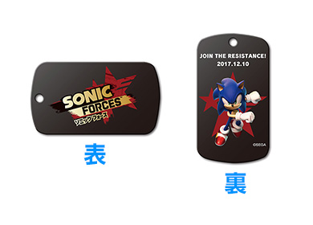
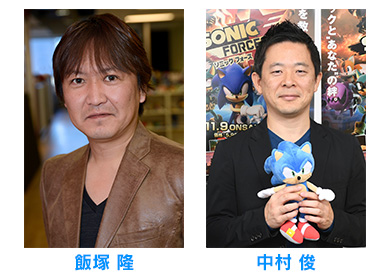
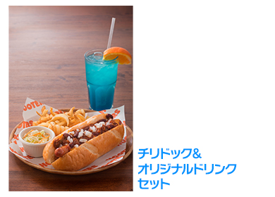
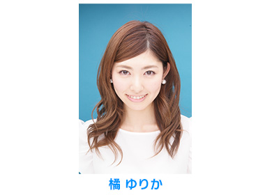

セガ公式『ソニックフォース』タイムアタック大会 イベント情報
2017年12月10日（日）にフーターズ新宿西口店での実施が決定しているセガ公式『ソニックフォース』タイムアタック大会。
参加賞のプレゼントやサイン会の開催、決勝大会のインターネット生配信の決定等、追加情報をお知らせいたします。
大会レギュレーション「失格条件」を追記しました（2017年11月29日）
参加賞プレゼントの決定！
予選にご参加いただいた方全員に参加賞「『ソニックフォース』大会開催記念ドッグタグ」をプレゼントいたします。
※お一人様につき1個お渡しいたします。
※参加賞は数に限りがございます。無くなり次第終了とさせていただきます。
プロデューサーサイン会の実施が決定！
予選実施中の会場で11:30から、『ソニックフォース』のゲームソフトご購入者を対象とした「ソニックシリーズプロデューサー飯塚 隆」・「『ソニックフォース』プロデューサー 中村 俊」のサイン会を実施いたします。11:00より会場内で先着100名様に整理券を配布いたしますので、奮ってご参加ください。
※サインは整理券1枚につき、1回とさせていただきます
※ゲームソフト、またはダウンロード版の購入証明になるものをお持ちください
※サイン色紙のご用意はございません。ゲームソフトのパッケージや、ご自身でお持ち込みいただいたグッズにサインをさせていただきます。（撥水性のあるものや、一部の布製品など、ご指定いただいた対象物によってはサインをお断りする場合があります）
決勝戦をフーターズ×ソニックのコラボメニューを食べながら観戦しよう！
決勝戦のご観覧及び席へのご案内をご希望の方は、14:00～15:30までフーターズ×ソニックコラボメニューのご注文が可能です。
※ご着席いただいた方のみご飲食いただけます。
※満席の場合はご着席をお待ちいただきます。
※混雑状況により、ご合席をお願いする場合がございます。
※コラボメニューはセットのみでのご提供となります
決勝戦のインターネット生配信が決定 橘 ゆりかさんもゲストで登場！
決勝戦をYouTube Live、Periscopeにて配信することを決定いたしました。「ソニック」シリーズプロデューサー飯塚 隆・『ソニックフォース』プロデューサーの中村 俊と、スペシャルゲストとして女優でタレントの橘 ゆりかさんをお迎えし、大会の模様をお届けいたします。ぜひご覧ください。
| 番組名 | セガ公式『ソニックフォース』タイムアタック大会 決勝戦 |
|---|---|
| 放送日 | 2017年12月10日（日）14:30～ |
| 出演者 | 飯塚 隆（「ソニック」シリーズプロデューサー） 中村 俊（『ソニックフォース』プロデューサー） |
| ゲスト | 橘 ゆりか |
| 視聴ページ | ・YouTube Live ・Periscope：放送時間に行われるソニックフォースTwitterアカウント（@SONIC_FORCES_JP）からのツイートで視聴できます。 |
優勝賞品『ソニックフォース』オリジナル高精細グラフィックパネルのデザインを公開！
決勝戦で見事優勝した方には、B3サイズの『ソニックフォース』オリジナル高精細グラフィックパネルをプレゼントいたします。
決勝戦終了後、豪華「ソニックグッズ」が当たる抽選会を実施！
※画像はイメージです、賞品内容は選べません
決勝戦終了後の会場で、豪華「ソニックグッズ」の詰め合わせが当たる抽選会を実施します。決勝戦ご観覧入場時に抽選券を配布いたします。（途中入場時は配布いたしません）
| 大会名称セガ公式『ソニックフォース』タイムアタック大会 | |
|---|---|
| 日程 | 12月10日（日） |
| スケジュール | 10:00～13:00：エントリー受付～予選大会実施 13:00：予選終了後、入替のため会場一時閉鎖 14:00：決勝戦観覧入場開始（コラボメニューオーダー開始） 14:30～15:30 決勝戦（予定） ※インターネット生配信も実施 16:00：終了 |
| 場所 | フーターズ 新宿西口店 〒160-0023 東京都新宿区西新宿1-8-5 アルファ107ビル B1F-B2F |
| 大会参加費 | 無料 |
| 参加賞 | 『ソニックフォース』大会開催記念ドッグタグ |
| 優勝賞品 | 『ソニックフォース』オリジナル高精細グラフィックパネル（後日発送） 副賞：スーパーカップ1.5倍しょうゆラーメン 100個(提供：エースコック) |
| 大会内容 | 予選、決勝戦の課題ステージのクリアタイムを競うタイムアタック大会。 |
| 参加方法 | 大会当日、会場にて予選へエントリーしてください。 その他、大会の詳しい内容やレギュレーションについては、「ソニックチャンネル」大会情報をご確認ください。 |
| 詳細情報 | ソニックチャンネル：セガ公式『ソニックフォース』タイムアタック大会開催概要ページ |